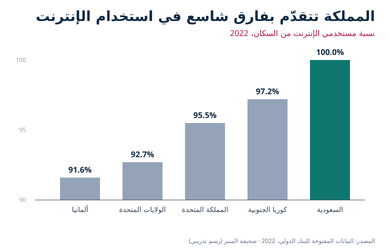

جدول بيانات. سياسة الذكاء الاصطناعي في هذا المختبر: الخطوات 1 إلى 4 دون أي مساعد: هذه محاولتك الأولى، وهي ما يُقيَّم. المساعد المعتمد يدخل في الخطوة 5 معلّمًا فقط.
افتح ورقة «المصدر» ثم ورقة «الجدول». أجب لنفسك: من جمع البيانات؟ لأي سنة؟ ما تعريف كل عمود؟ من اختار الدول الثلاثين وكيف؟
املأ العمود الأول في ورقة «الرسم 1». لا تكتب «الرسم مضلل»: اكتب ما الذي يعرضه فعلًا، وما الذي يجب أن يكون صحيحًا ليصح العنوان.
| العنصر | السؤال الذي تجيب عنه |
|---|---|
| الدليل | أي أعمدة وأي دول وأي سنة؟ |
| الافتراضات | هل يوجد عامل ثالث يفسّر العمودين معًا؟ انظر العمود الثالث في الجدول. |
| القيود | ماذا لا يثبت رسم لدول في سنة واحدة؟ |
املأ العمود الأول في ورقة «الرسم 2». انظر أولًا إلى المحور الرأسي: من أين يبدأ؟ ثم قارن طول العمودين بالرقمين المكتوبين فوقهما.
للرسم 1: رتّب الجدول بحسب عمود الإنترنت، واحسب متوسط العمر المتوقع للدول الخمس الأولى وللخمس الأخيرة، والفرق بينهما. ثم احسب الفرق نفسه بين كل الدول التي نسبتها 90% فأعلى وكل الدول دون 90%.
للرسم 2: احسب الفرق بالنقاط المئوية بين السعودية وألمانيا، ثم نسبة الرقمين، ثم نسبة طول العمودين كما يظهران فوق خط 90.
دوال تكفيك: AVERAGE وAVERAGEIF والطرح والقسمة. اكتب الصيغة والنتيجة في صف «الرقم الذي أعدت حسابه».
الآن فقط افتح المساعد. الصق إطارك للرسم 1 واسأله أن ينقده لا أن يكتبه. أضف ما تقتنع به في العمود الثاني بلون مختلف، وتحقق من أي رقم يذكره من الجدول قبل أن تكتبه.
سجّل المخرج في ملف أعمالك، ومعه سجل المحادثة.
ارسم الرسم 2 من جديد في جدول البيانات بمحور يبدأ من الصفر، واكتب له عنوانًا من سطر واحد لا يضلّل.
labs/solutions/W3_1_claim_clinic.md، وهي معاد حسابها من الجدول: uv run labs/solutions/check.py 3.1. الفرق بين الخمس الأولى والأخيرة 14.2 سنة، وعند القسمة على 90% يصير 7.2 سنة. نسبة طول العمودين 6.25 ونسبة الرقمين 1.09.